Toteez, community mobile app. Case study.
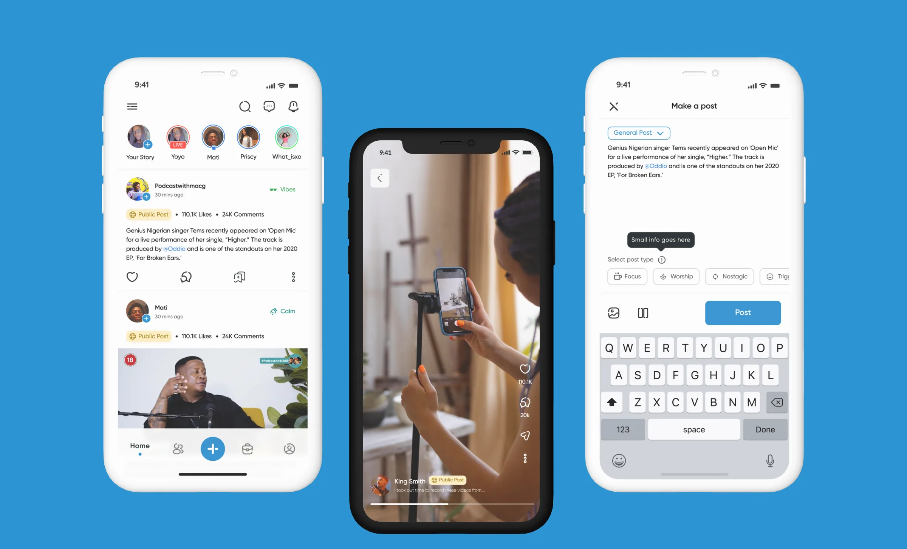
Description
Toteez is a community mobile app that blends a social feed, messaging and a lightweight jobs board in one place. People share posts and videos, chat one to one or in groups, and browse, filter or post jobs, all from a clean, friendly interface designed to feel effortless.
Period2025
Length of read4 min read
DesignerPrisca Olatunji, Mati
The designsThe mobile app
Home & feed
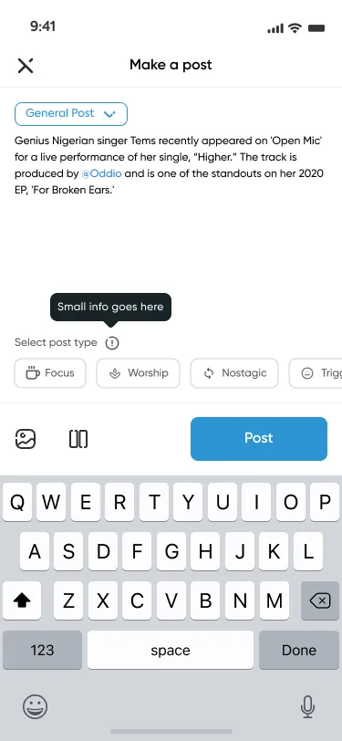
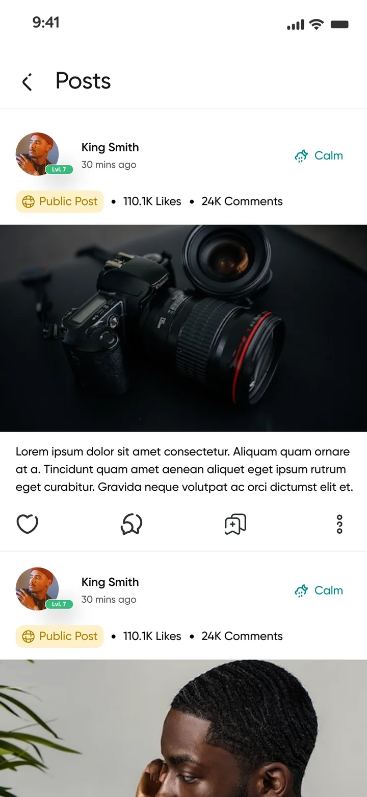
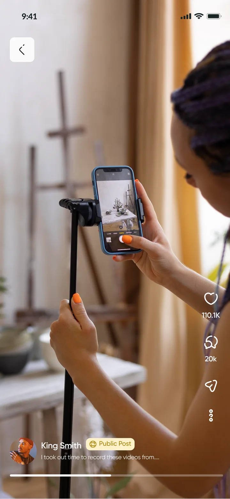
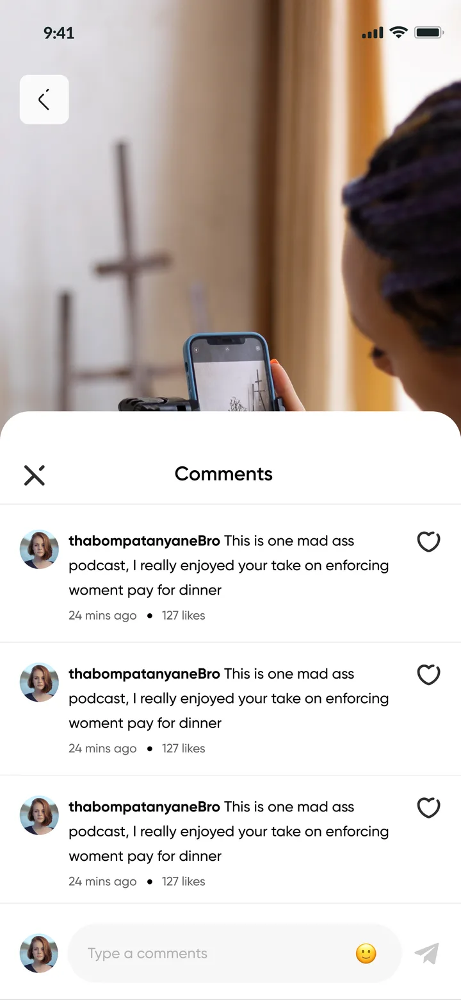
Jobs
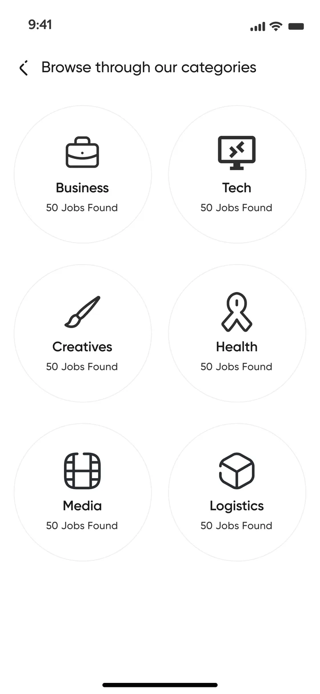
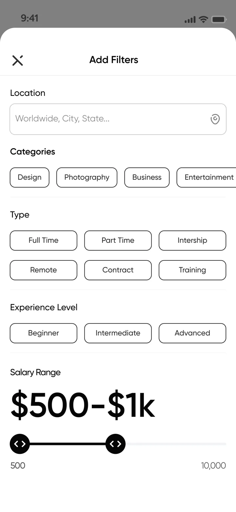
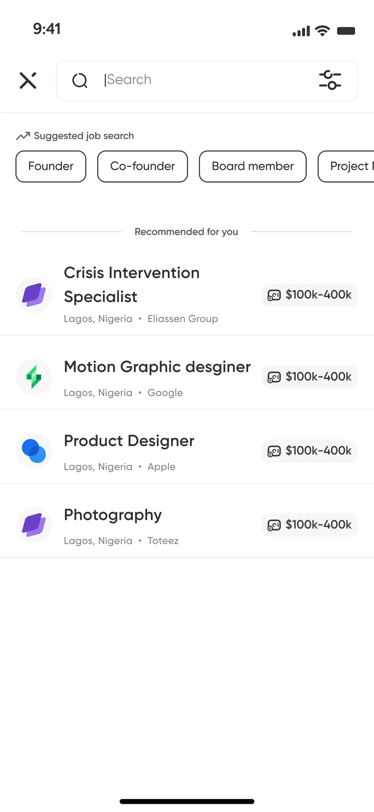
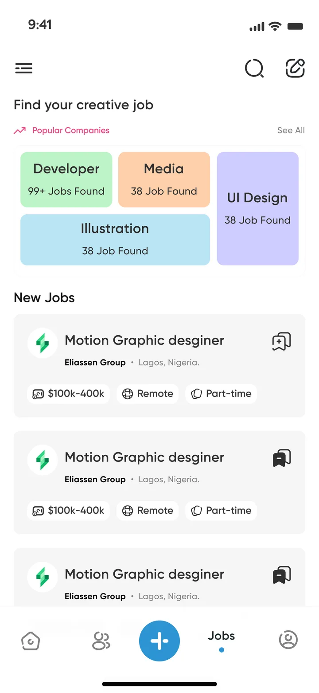
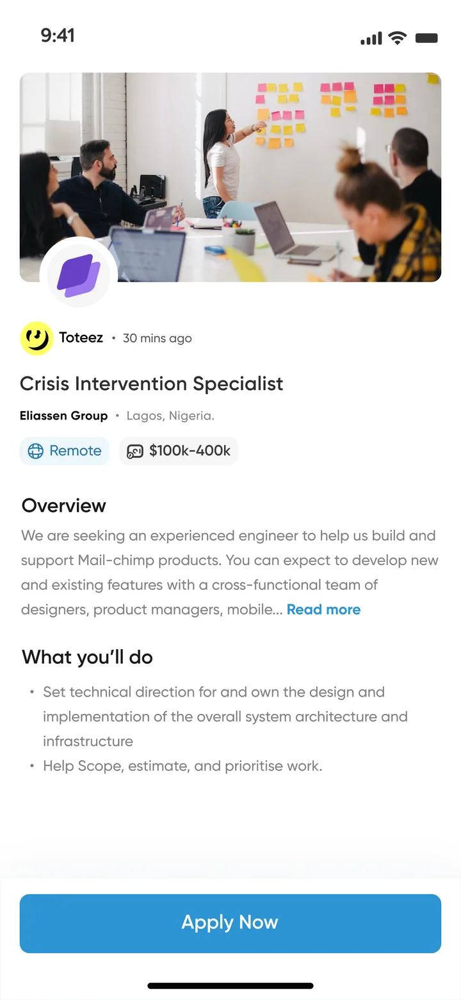
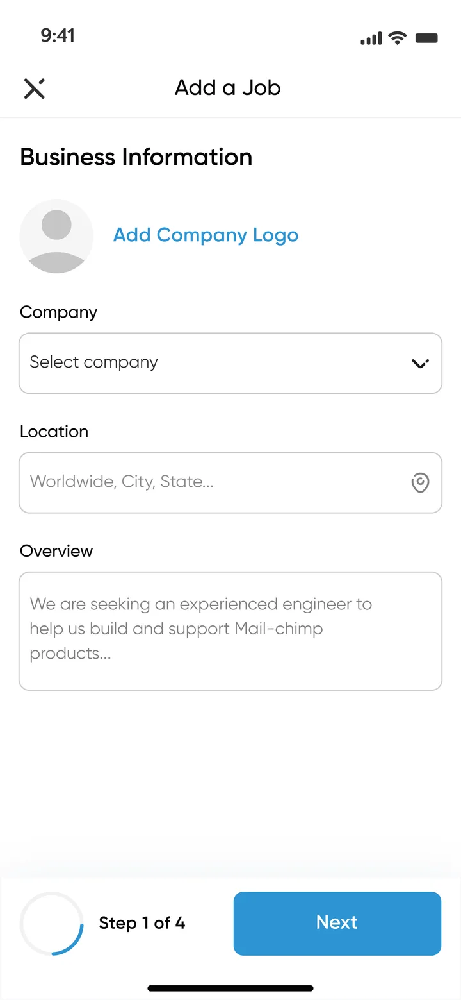
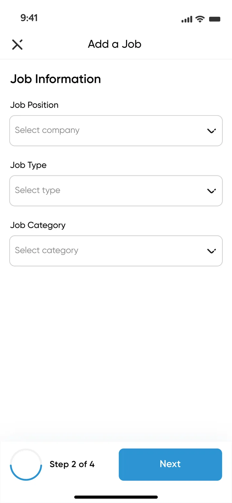
Messaging
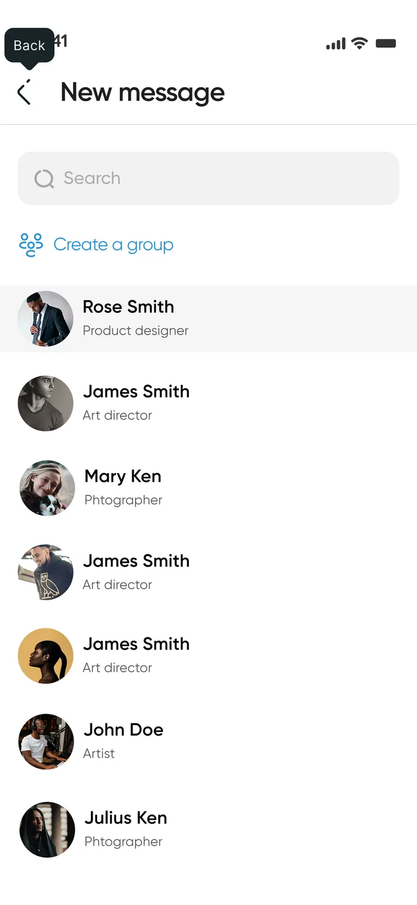
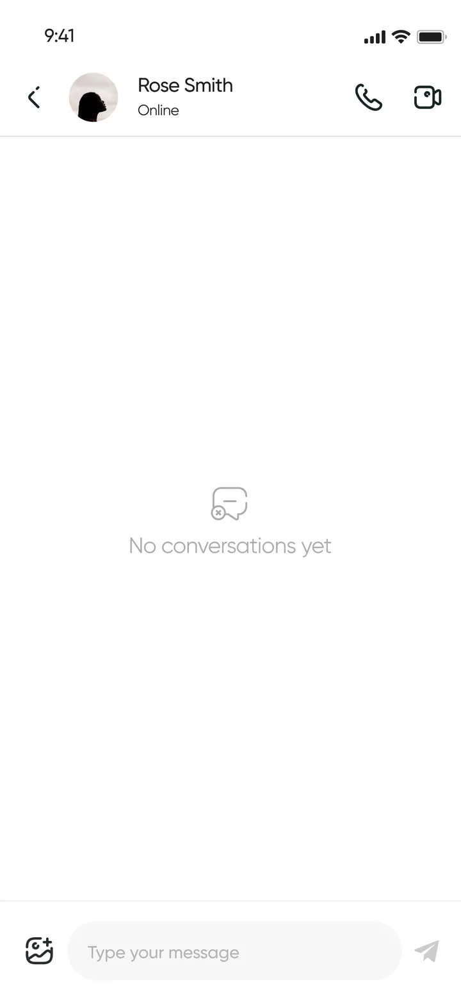
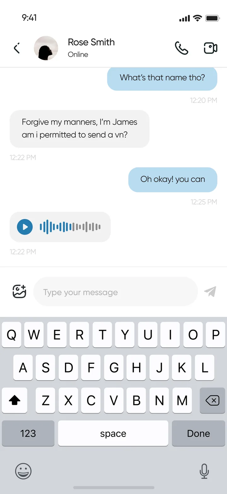
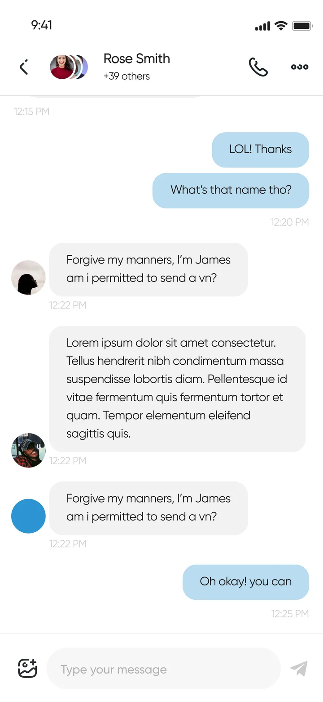
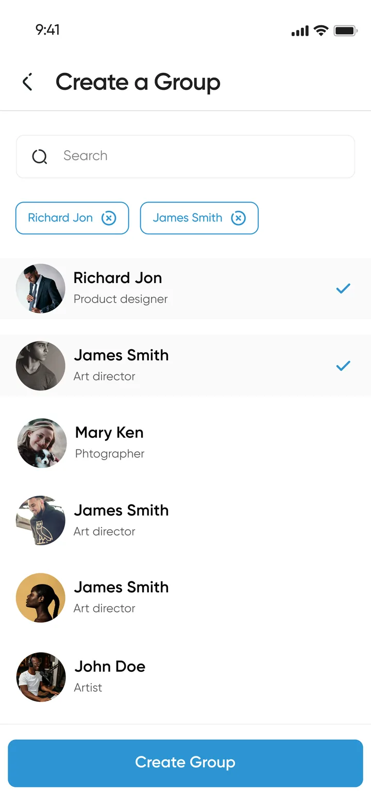
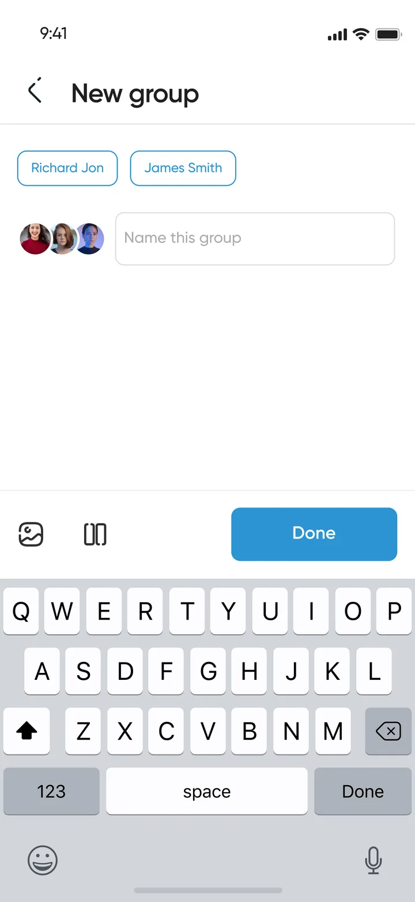
Profile
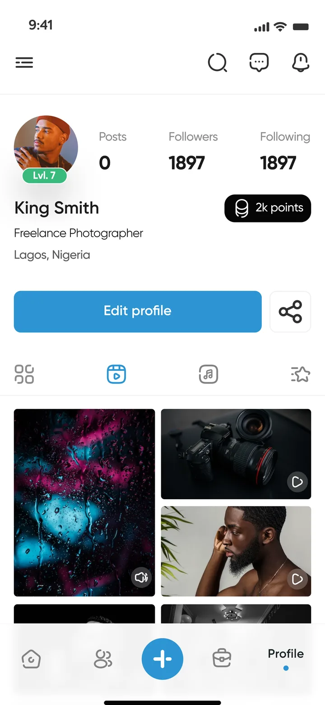
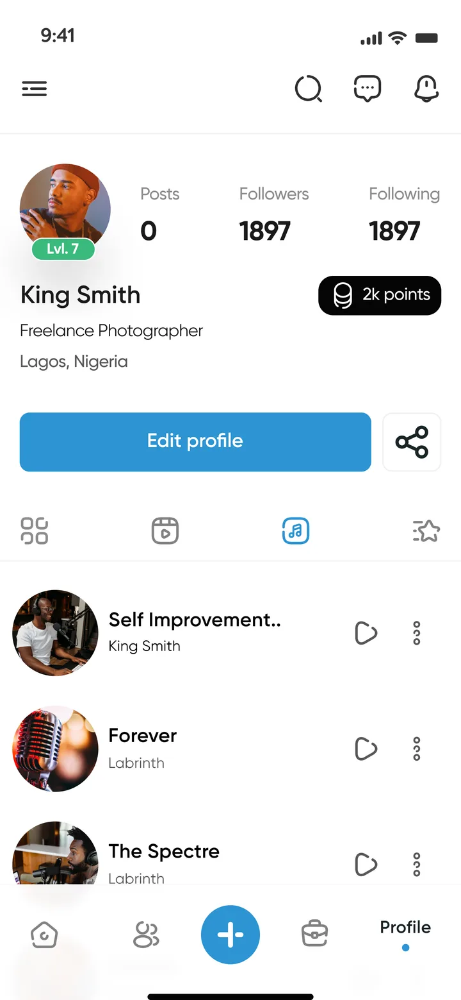
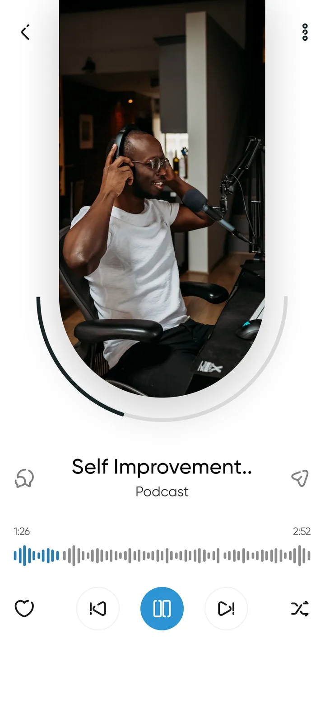
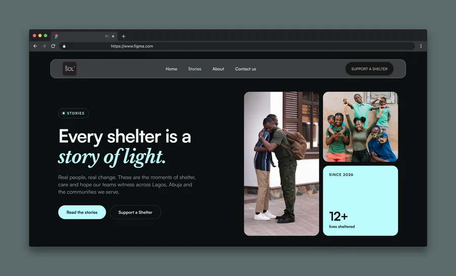
All Projects Next Project Ajo